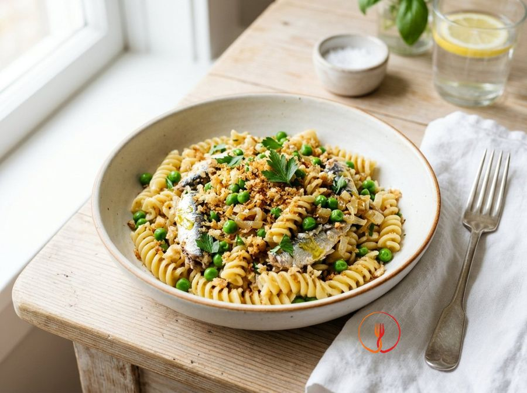

Pasta with Sardines, Peas and Toasted Breadcrumbs
A complete dish inspired by Sicilian peasant traditions, enriched with legumes for a balanced protein profile. The crunchy breadcrumbs replace expensive cheese, providing savouriness and texture.
Ingredients
- Short pasta such as fusilli or penne320 g
- Sardines in oil or brine (drained)160 g
- Frozen peas250 g
- Coarsely grated stale bread60 g
- Yellow onion1 pcs
- Extra virgin olive oil30 ml
- Dried chilli flakes1 pizzico
Allergens
Gluten, Fish
Method
- Bring a large pot of salted water to the boil for the pasta; this is essential to ensure the wheat grains hydrate evenly.
- While the water is heating, finely chop the onion and let it soften in a large pan with 15 ml of oil and a tablespoon of water for 5 minutes, until it becomes translucent and sweet.
- Add the frozen peas to the onion and cook for 8-10 minutes over medium heat; the peas should be tender but maintain a bright green colour, a sign that the vitamins have been preserved.
- In a separate small pan, toast the breadcrumbs with the remaining oil and the chilli for 3-4 minutes until golden and crunchy: this step develops the Maillard reaction for extra flavour.
- Add the flaked sardines to the pea and onion mixture, stirring gently for 2 minutes so the flavours meld without breaking up the fish too much.
- Cook the pasta in the boiling water according to the packet instructions, but drain it one minute before the end (al dente) to finish cooking in the sauce.
- Toss the pasta in the pan with the sauce, adding a ladle of cooking water if necessary to create a creamy emulsion that binds the ingredients.
- Plate immediately, sprinkling each portion with plenty of crunchy toasted breadcrumbs, which act as the savoury and textural element.
Nutrition facts (estimate)
| Per serving (205 g) | Per 100 g | |
|---|---|---|
| Energy | 2029 kJ / 485.0 kcal | 989.8 kJ / 236.6 kcal |
| Protein | 22.0 g | 10.7 g |
| Carbohydrates | 68.0 g | 33.2 g |
| of which sugars | – g | – g |
| Fat | 14.0 g | 6.8 g |
| of which saturates | – g | – g |
| Fibre | – g | – g |
| Salt | – g | – g |
AI estimates based on average CREA / USDA data: indicative only, not a substitute for medical or dietitian advice.
Open the recipe in the app for the shopping list, ingredient sheets and nearby shops.